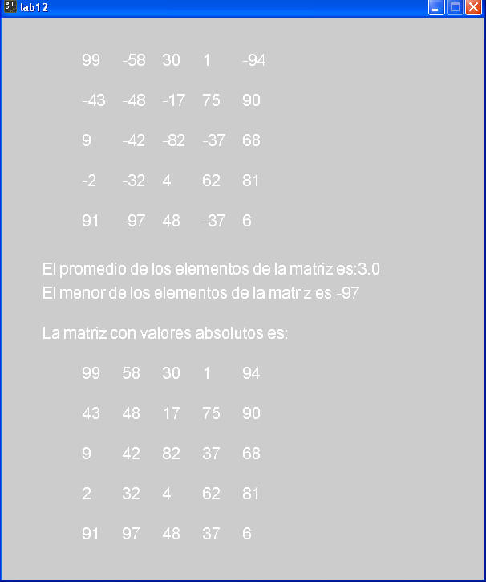

1.- Baja el siguiente archivo y descompáctalo. Posteriormente analízalo y agrega los métodos siguientes:
a) La función menorMatriz() que regresa el elementos más "pequeño" de la matriz.
b) El procedimiento valorAbsoluto() que convierte a los números negativos de la matriz en valores positivos.
La apariencia de la ventana al terminar ambos incisos podría ser la siguiente:

2.- Introduce las siguientes líneas de código, mientras lo haces, trata de entenderlo. Como verás no es necesario tener en todos los dibujos los métodos setup() y draw(). Generalmente estos métodos se recomiendan cuando construimos animaciones.
La apariencia de la ventana al terminar de capturar es la siguiente:
¿Por qué se crea este efecto?
¿Qué cambiarías para que se dibujen tonos azules?
3.- Introduce las siguientes líneas de código, mientras lo haces, trata de entenderlo. Si te resulta difícil hacerlo, entonces captura el código y después de ver en ejecución el programa, lo analizas.
Antes que nada, en el folder de data salva la siguiente imagen.
Probablemente no sea de tu agrado este equipo de futbol, por lo que debes de buscar una imagen que sea de tu gusto y guardarla en la carpeta data. Pon atención a las líneas de código que debes modificar para que el programa ahora muestre tu imagen. La imagen debe ser lo más sencilla posible para que la extrusión sea evidente y legible.
Una vez hecho lo anterior, prueba tu programa y reflexiona sobre las siguiente preguntas:
¿Este ejercicio podría haberse realizado con un arreglo unidimensional?
¿Por qué se utilizó una matriz?